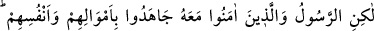
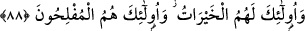
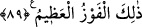

88. Fakat Rasûl ve onunla beraber inananlar, mallarıyla ve canlarıyla cihad
ettiler. İşte bütün hayırlar onlarındır ve işte kurtuluşa erenler onlardır.
“Fakat Rasûl ve onunla beraber” Allah’a ve Allah Teâlâ katından gelen şeylere
“inananlar, mallarıyla ve canlarıyla cihad ettiler.” Münâfıklar savaştan geri kaldılar
diye cihad emri ihlal edilmedi. Çünkü onlardan çok daha hayırlı, gerek niyet gerekse
inanç bakımından daha samimi olan (müminler) cihad görevini yerine getirdiler.
“onunla beraber inananlar” ifadesi, Peygamber Efendimiz (a.s.)’ın inandığı gibi
inananlar, mânâsına gelir. Çünkü elbette müminlerin imanları ile Rasûl’ün imanı aynı
zamanda gerçekleşmemiştir. Bu ifâde, “Süleymân’la beraber âlemlerin Rabbi olan
Allah’a teslim oldum.” (en-Neml, 27/44) âyetindeki ifadeye benzer ki “Ben,
Süleymân’ın teslim olması gibi teslim oldum.” demektir.
“İşte” zikredilen sıfatları sayesinde “bütün hayırlar onlarındır.” bütün dünya ve
âhiret menfaatleri; dünyadaki zafer ve ganimet, âhiretteki cennet, izzet ve ikram onlara
aittir.
“
(hayırlar)” kelimesinin mânâsının, cennetteki güzel eşler, yani hûriler olması
da mümkündür. Çünkü Allah Teâlâ bir âyette “İçlerinde huyu güzel (hayrât), yüzü
güzel kadınlar vardır.” (er-Rahmân, 55/70) buyurmuştur.
Âbidlerin hayrâtı, işledikleri sevaplardır. Bu sevaplar onların amelleriyle ilgilidir.
Âriflerin hayrâtı ise Hak Teâlâ’nın onlara bahşettiği mevhibelerdir. Bunlar, onların
hâlleriyle ilgilidir.
“Ve işte kurtuluşa erenler onlardır.” Yâni, arzu edilen güzel neticeye nâil olanlar
onlardır. Yoksa kısa sürede tükenip yok olan bazı dünya hazlarına sahip olanlar değil.
89. Allah, onlar için altlarından nehirler akan, içlerinde sürekli kalacakları
cennetler hazırlamıştır. İşte büyük kurtuluş budur.
“Allah onlar için” âhirette “altlarından” yâni toprağın altından değil zemininin
alçak kısımlarından, ağaçlarının altlarından veya köşklerinin ve odalarının altından
“nehirler akan, içlerinde sürekli kalacakları” kalmaları takdir ve tesbit edilen
“cennetler hazırlamıştır.”
Cennet, içerisinde meyveli ağaçların bulunduğu bostan demektir.